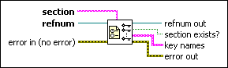

Get Key Names VI
Owning Palette: Configuration File VIs
Requires: Base Development System
Gets the names of all keys in the specified section from the configuration data identified by refnum.
Format the content of an .ini file correctly when you use this VI.

 Add to the block diagram Add to the block diagram |
 Find on the palette Find on the palette |